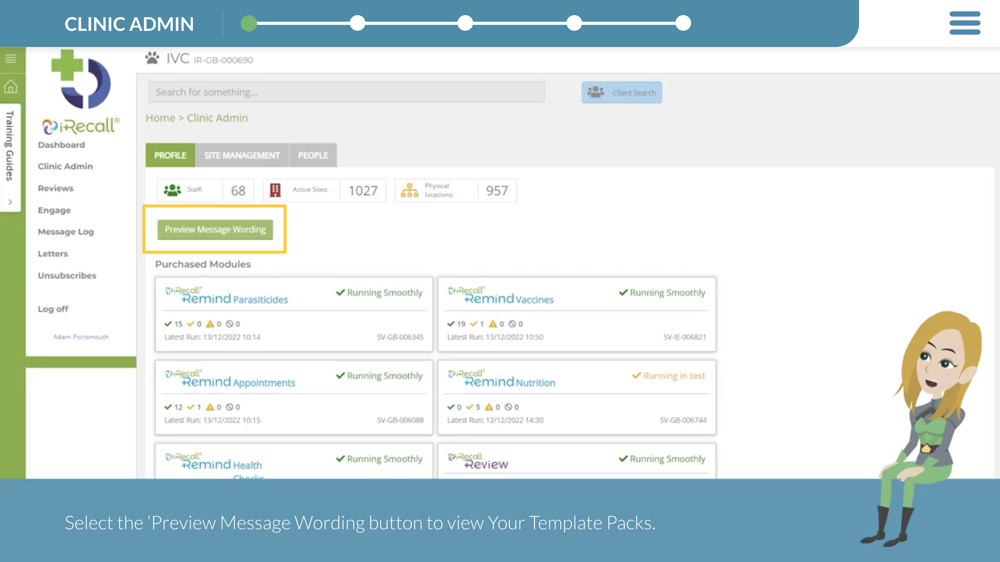
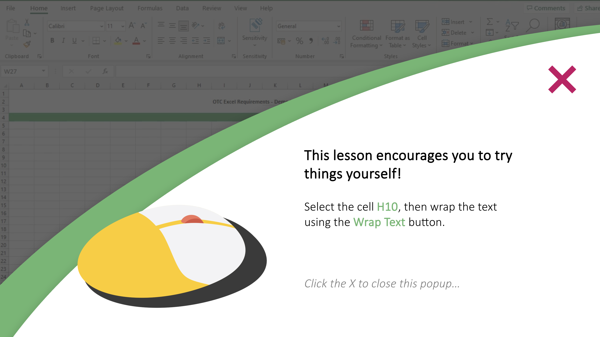

Beyond Standard eLearning: What's Possible Today
Custom learning experiences that leverage modern technology to solve specific business challenges.
Most Training Still Looks Like It Did When I Entered the Industry
Authoring tools have advanced dramatically, but most organisations are still delivering click-through presentations and basic quizzes — while their business challenges demand more sophisticated solutions. L&D is not keeping up.
The Real Power of Modern Learning Technology
Today's authoring platforms, combined with AI and custom scripting, remove virtually every limitation on what learning experiences can do. The only constraints are imagination and willingness to innovate.
-

AI-Powered Scenario Training
Real-time conflict resolution practice for customer service teams, using AI to generate realistic, challenging, and — most importantly — relevant interactions. Each scenario adapts based on the learner's responses, providing personalised coaching at the moment of need.
Full course not available to view — client NDA.
-

Intelligent Communication Coaching
AI-driven feedback that helps teams write clearer, more actionable emails. Instead of generic communication tips, learners receive specific, contextual guidance on their actual writing — measurably improving interdepartmental collaboration.
Full course not available to view — client NDA.
-

Targeted Compliance Solutions
Compliance training that solves specific regulatory problems for the exact people who face them. No generic courses covering everything for everyone — precision-targeted interventions that ensure the right behaviours in the right situations.
View learning course -

Interactive Business Narratives
Story-driven learning that mirrors real workplace challenges, letting learners experience the consequences of decisions in a safe environment before facing them on the job.
View learning course
Purpose-Built, Not Template-Driven
Every solution is crafted for a specific business challenge. No cookie-cutter templates or off-the-shelf modules (although I can create those and have extensive experience doing so) — just learning experiences engineered to drive the exact outcomes the organisation needs.
-

iRecall — A Training Package
Introductions to new software can be engaging and effective. The key is giving the learner the knowledge and understanding of how the tool will make their role easier.
View learning course -

Excel Basics
Built to create a baseline level of competency in the key Microsoft Excel skills a finance team was expected to have. Very well received by both key stakeholders and the learners themselves.
View learning course
Schedule a Conversation
Have a specific business challenge in mind? Let's talk through what a purpose-built solution could look like for it.
Message me on LinkedIn